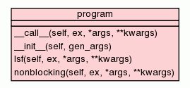

Class program

Decorator to wrap external programs for use by bein.
Bein depends on external programs to do most of its work. In this
sense, it's a strange version of a shell. The ``@program`` decorator
makes bindings to external programs only a couple lines long.
To wrap a program, write a function that takes whatever arguments you
will need to vary in calling the program (for instance, the filename for
touch or the number of seconds to sleep for sleep). This function should
return a dictionary containing two keys, ``'arguments'`` and
``'return_value'``. ``'arguments'`` should point to a list of strings
which is the actual command and arguments to be executed
(``["touch",filename]`` for touch, for instance).
``'return_value'`` should point to a value to return, or a callable
object which takes a ProgramOutput object and returns the value that will
be passed back to the user when this program is run.
For example, to wrap touch, we write a one argument function that
takes the filename of the file to touch, and apply the ``@program``
decorator to it:
@program
def touch(filename):
return {"arguments": ["touch",filename],
"return_value": filename}
Once we have such a function, how do we call it? We can call it
directly, but ``@program`` inserts an additional argument at the
beginning of the argument list to take the execution the program is run
in. Typically it will be run like:
with execution(lims) as ex:
touch(ex, "myfile")
where ``lims`` is a MiniLIMs object. The ProgramOutput of touch is
automatically recorded to the execution ``ex`` and stored in the
MiniLIMS. The value returned by touch is ``"myfile"``, the
name of the touched file.
Often you want to call a function, but not block when it returns so
you can run several in parallel. ``@program`` also creates a method
``nonblocking`` which does this. The return value is a Future object
with a single method: ``wait()``. When you call ``wait()``, it blocks
until the program finishes, then returns the same value that you would
get from calling the function directly. So to touch two files, and not
block until both commands have started, you would write:
with execution(lims) as ex:
a = touch.nonblocking(ex, "myfile1")
b = touch.nonblocking(ex, "myfile2")
a.wait()
b.wait()
By default, ``nonblocking`` runs local processes, but you can control
how it runs its processes with the ``via`` keyword argument. For
example, on systems using the LSF batch submission system,s you can run
commands via batch submission by passing the ``via`` argument the value
``"lsf"``:
with execution(lims) as ex:
a = touch.nonblocking(ex, "myfile1", via="lsf")
a.wait()
You can force local execution with ``via="local"``.
Some programs do not accept an output file as an argument and only
write to ``stdout``. Alternately, you might need to capture ``stderr``
to a file. All the methods of ``@program`` accept keyword arguments
``stdout`` and ``stderr`` to specify files to write these streams to. If
they are omitted, then both streams are captured and returned in the
``ProgramOutput`` object.
|
|
__call__(self,
ex,
*args,
**kwargs)
Run a program locally, and block until it completes. |
|
|
|
|
__init__(self,
gen_args)
x.__init__(...) initializes x; see x.__class__.__doc__ for signature |
|
|
|
|
_local(self,
ex,
*args,
**kwargs)
Method called by ``nonblocking`` for running locally. |
|
|
|
|
_lsf(self,
ex,
*args,
**kwargs)
Method called by ``nonblocking`` to run via LSF. |
|
|
|
|
lsf(self,
ex,
*args,
**kwargs)
Deprecated. |
|
|
|
|
nonblocking(self,
ex,
*args,
**kwargs)
Run a program, but return a Future object instead of blocking. |
|
|
|
Inherited from object:
__delattr__,
__format__,
__getattribute__,
__hash__,
__new__,
__reduce__,
__reduce_ex__,
__repr__,
__setattr__,
__sizeof__,
__str__,
__subclasshook__
|
|
Inherited from object:
__class__
|
__call__(self,
ex,
*args,
**kwargs)
(Call operator)
|
|
Run a program locally, and block until it completes.
This form takes one argument before those to the decorated function,
an execution the program should be run as part of. The return_code, pid,
stdout, stderr, and command arguments of the program are recorded to that
execution, and thus to the MiniLIMS object.
|
__init__(self,
gen_args)
(Constructor)
|
|
x.__init__(...) initializes x; see x.__class__.__doc__ for
signature
- Overrides:
object.__init__
- (inherited documentation)
|
_local(self,
ex,
*args,
**kwargs)
|
|
Method called by ``nonblocking`` for running locally.
If you need to pass a ``via`` keyword argument to your function, you
will have to call this method directly.
|
lsf(self,
ex,
*args,
**kwargs)
|
|
Deprecated. Use nonblocking(via="lsf") instead.
|
nonblocking(self,
ex,
*args,
**kwargs)
|
|
Run a program, but return a Future object instead of blocking.
Like __call__, nonblocking takes an Execution as an extra,
initial argument before the arguments to the decorated
function. However, instead of blocking, it starts the program
in a separate thread, and returns an object which lets the
user choose when to wait for the program by calling its wait()
method. When wait() is called, the thread blocks, and the
program is recorded in the execution and its value returned as
if the use had called __call__ directory. Thus,
with execution(lims) as ex:
f = touch("boris")
is exactly equivalent to
with execution(lims) as ex:
a = touch.nonblocking("boris")
f = a.wait()
All the methods are named as _method, with the same arguments
as ``nonblocking``. That is, the ``via="local"`` method is
implemented by ``_local``, the ``via="lsf"`` method by
``_lsf``, etc. When writing a new method, name it in the same
way, and add a condition to the ``if`` statement in
``nonblocking``.
If you need to pass a keyword argument ``via`` to your
program, you will need to call one of the hidden methods
(``_local`` or ``_lsf``) directly.
|